Import, process and map sample-based geochemistry — XRD mineralogy, XRF element / oxide chemistry and source-rock analyzer (Rock-Eval) pyrolysis (S1, S2, S3, Tmax, TOC) — from boreholes, wells and outcrops. One tidy data model, readers that cope with real laboratory spreadsheets (mineral name variants, Zr_ppm suffixes, <5 censored values), the usual processing steps and derived indices, and ggplot2 plots in depth and in plan.
Documentation: https://mjorden.github.io/geochemR/ — reference by task, and the get-started article.
# install.packages("remotes")
remotes::install_github("mjorden/geochemR")In one screen
library(geochemR)
ds <- gc_example # 12 holes x 15 intervals, XRD + XRF + SRA (synthetic)
ds
#> <gc_data> 180 samples in 12 holes; 4205 measurements
#> methods: SRA (633), XRD (1232), XRF (2340)
#> censored (<LOD): 86
ds <- ds |>
gc_substitute_lod("half") |> # < LOD -> LOD / 2 (qualifier kept)
gc_indices() # HI, OI, PI, Ro_eq, CIA, Si/Al, carbonate, clay, brittleness ...
plot_depth_profile(ds, "SRA", c("TOC", "S2", "Tmax", "HI"), holes = c("H01", "H04", "H09", "H12"))
plot_map(ds, "SRA", "TOC", depth = c(50, 110))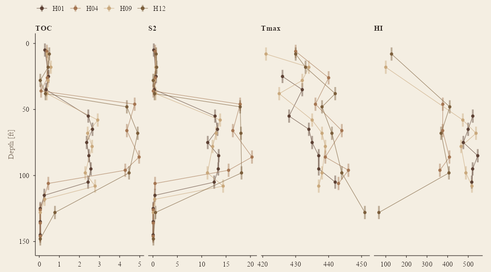
plot_depth_profile(): one panel per analyte, holes as colours, interval samples drawn over their interval, censored values hollow.
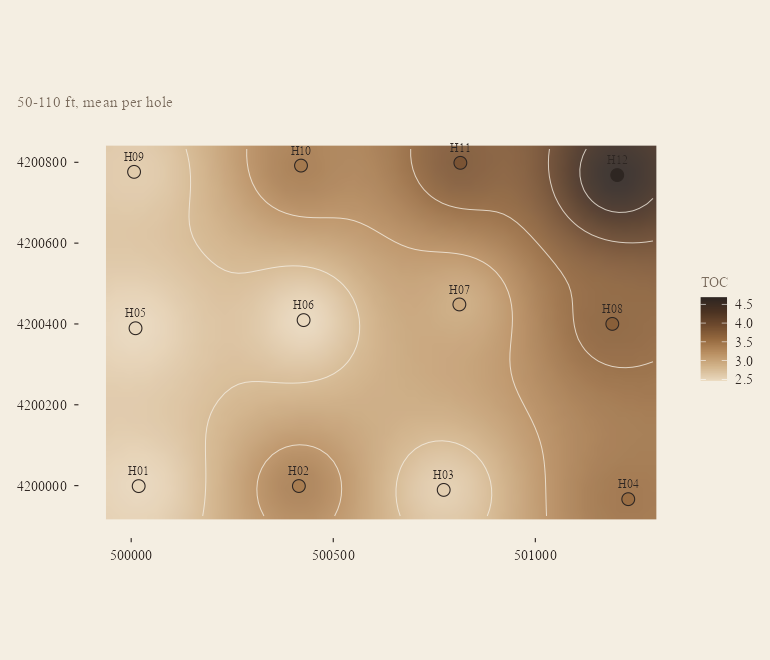
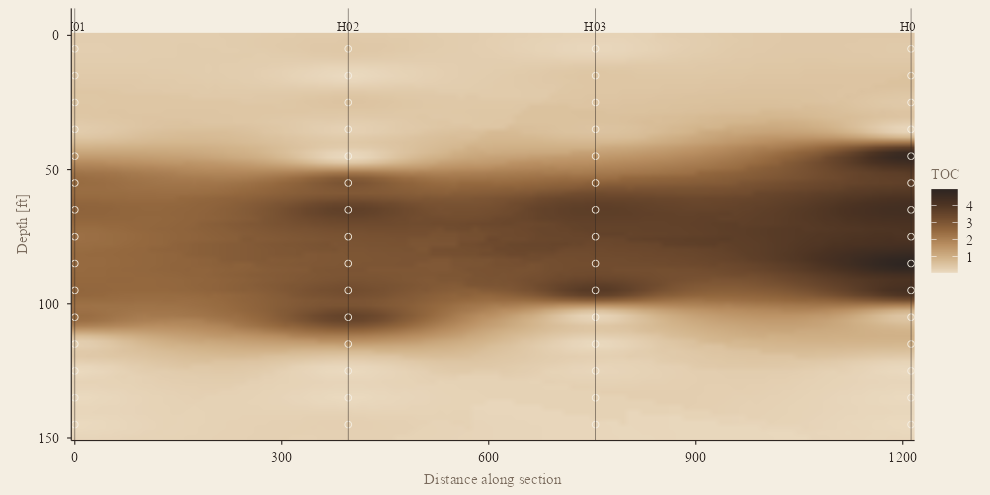
plot_map(): mean TOC over 50–110 ft per hole on an inverse-distance surface with contours. plot_section(): interpolated cross-section along H01 → H04, sample bins marked.
Your own data
A whole deliverable workbook. Commercial cuttings-analysis reports put every method on one sheet — a group row (SAMPLE INFO, TOC, TRADITIONAL PYROLYSIS, PAM PYROLYSIS, XRD BULK MINERALOGY, XRD CLAY SPECIATION, XRF ELEMENTAL CONCENTRATIONS), an analyte row, a unit row, a QC row, then one sample per row with the bottom depth of each cuttings interval and formation / zone labels. read_workbook() reads that layout in one call; the package ships a synthetic workbook in exactly that form.
f <- system.file("extdata", "cuttings_workbook.xlsx", package = "geochemR")
cu <- read_workbook(f, hole_id = "EX-1", lab = "Example Cuttings Lab") |> gc_indices()
#> read_workbook(): clay speciation reported relative to total clay; converted to bulk wt%
cu
#> <gc_data> 65 samples in 1 holes; 3640 measurements
#> methods: PAM (650), SRA (390), XRD (780), XRF (1820)
plot_depth_profile(cu, "SRA", c("TOC", "S1", "S2", "Tmax", "HI"))
plot_pam(cu) # stacked multi-ramp pyrolysis fractions
gc_hole_summary(cu, "SRA", by = c("hole_id", "formation"), analytes = c("TOC", "HI", "Tmax"))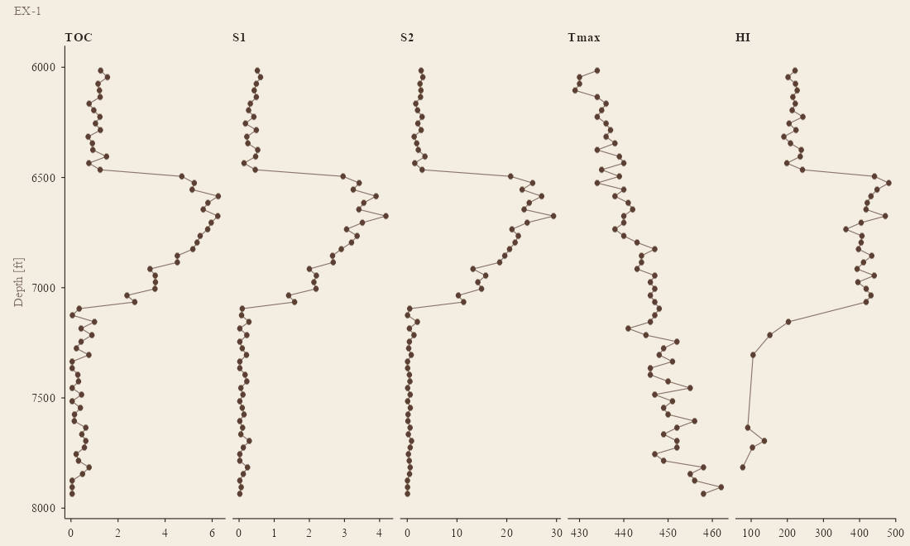
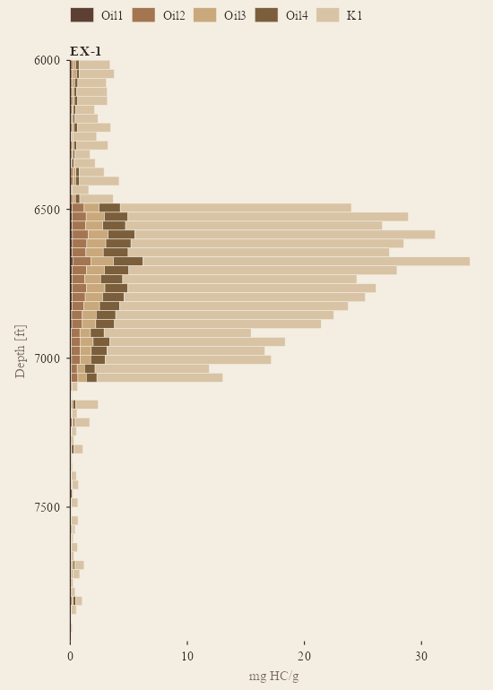
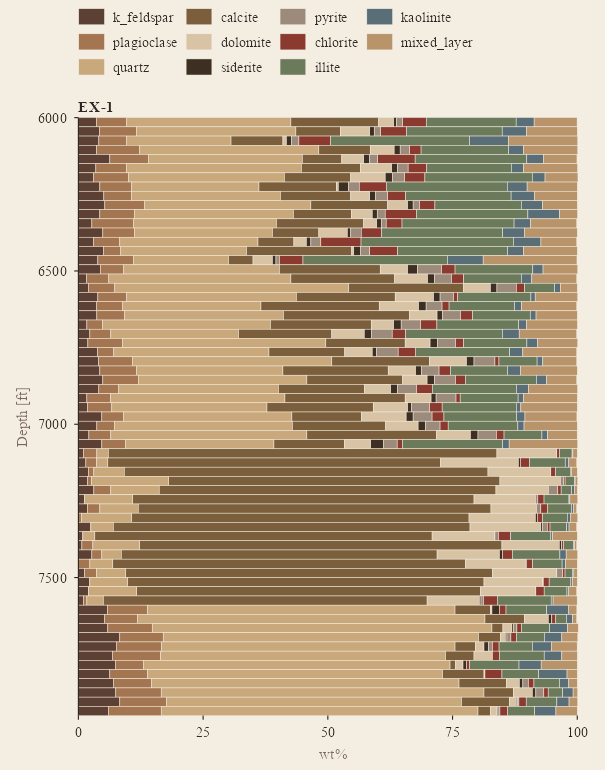
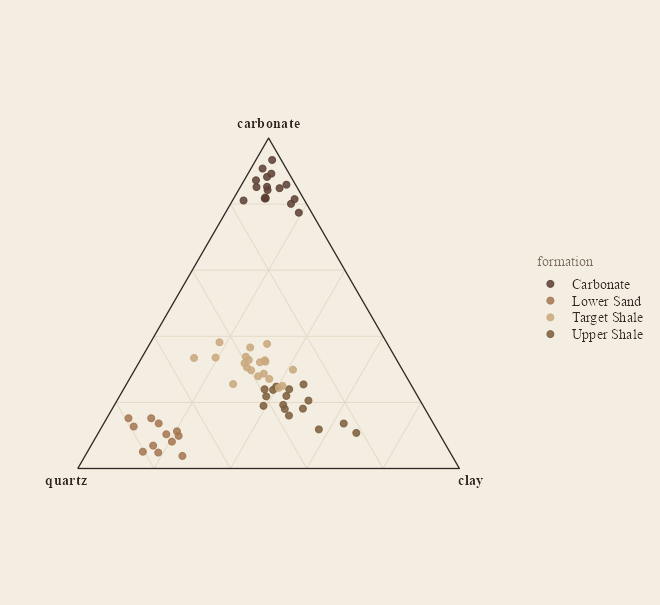
One cuttings well through four formations: plot_pam() (light hydrocarbons at the base of each bar, kerogen on top), plot_mineralogy(), and the quartz–carbonate–clay ternary coloured by formation.
Three separate tables. Otherwise one wide table per method — one row per sample — is all a lab usually sends. The readers match column names case-insensitively, with aliases, and tell you what they ignored.
samples <- read_samples("locations.csv")
# sample_id | hole (or well / borehole / station / api) | x, y (or easting, northing, lon, lat)
# z (elevation, optional) | depth_top (or depth / top / from) | depth_base (optional) | sample_type
xrd <- read_xrd("xrd.xlsx", lab = "Lab A")
# sample | Quartz | K-Feldspar | Plagioclase | Calcite | Dolomite | Pyrite | Illite/Mica | I/S | Kaolinite | Chlorite | Total Clay
# -> canonical names via gc_minerals (k_feldspar, mixed_layer, illite, total_clay, ...)
xrf <- read_xrf("xrf.csv", lab = "Lab B")
# sample | SiO2 | Al2O3 | ... | LOI | Zr_ppm | V (ppm) | Mo_ppm
# -> units from suffixes; "<2" -> value 2, lod 2, qualifier "<"; "n.d." -> NA
sra <- read_sra("pyrolysis.csv", lab = "Lab C")
# sample | TOC (wt%) | S1 | S2 | S3 | Tmax (Ro / VR optional)
ds <- gc_data(samples, dplyr::bind_rows(xrd, xrf, sra), crs = 26914, depth_unit = "ft")gc_data() validates on construction — unknown sample ids and inverted depths are errors; XRD totals far from 100, values below their own detection limit without a <, and duplicate rows are warnings — so a spreadsheet problem surfaces at import, not on a map. gc_wide(ds, "XRF") gets you back to one row per sample whenever you want it.
Gallery
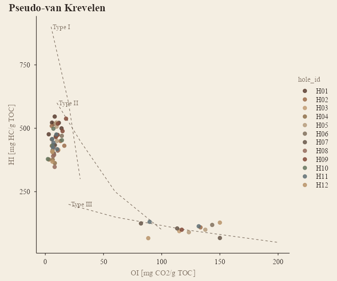
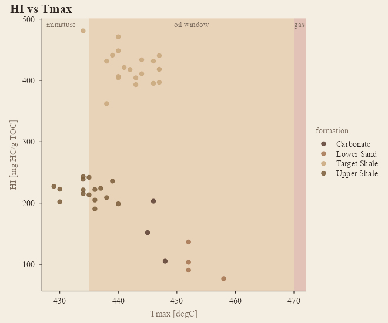
plot_kerogen(): pseudo-van Krevelen (HI vs OI) with Type I / II / III trends, and HI vs Tmax with immature / oil / gas windows for the cuttings well, coloured by formation.
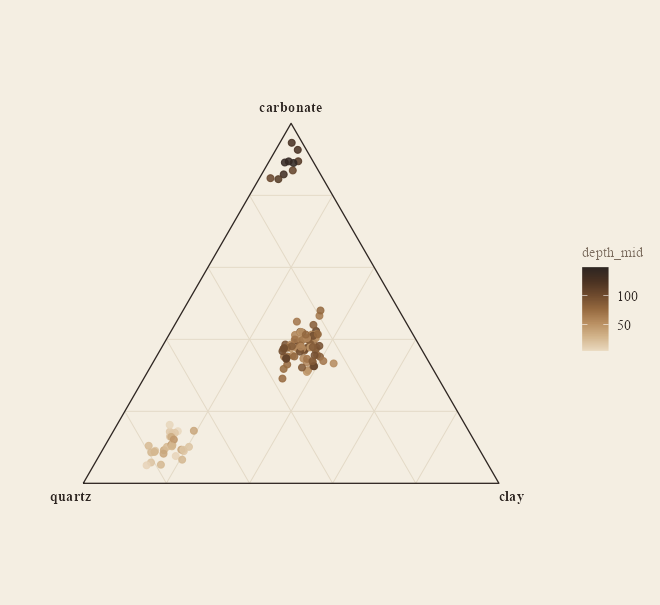
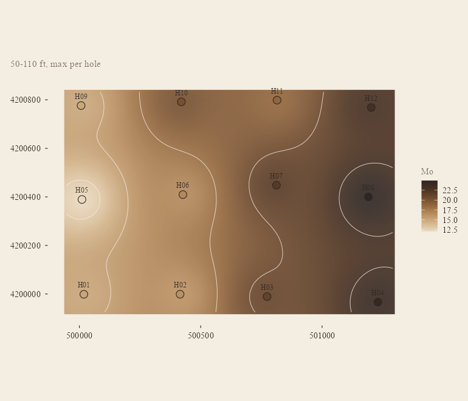
plot_ternary(): quartz – carbonate – clay from the XRD, no extra package. plot_map(fun = max): hottest Mo sample per hole over the mudstone.
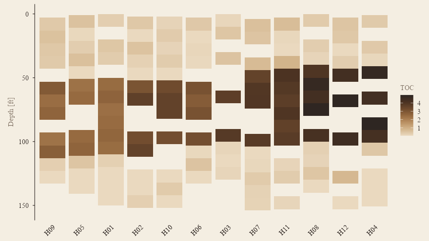
plot_depth_heatmap(): holes ordered west → east, TOC by interval.
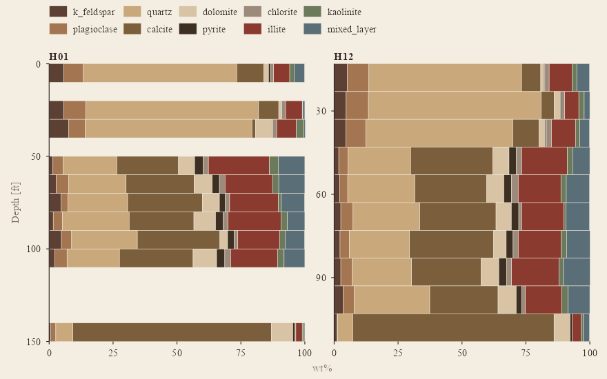
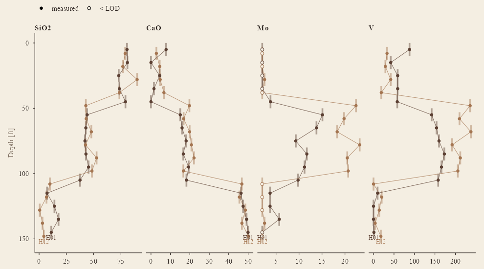
plot_mineralogy(): stacked XRD composition by interval. plot_depth_profile() on XRF: major oxides and censored trace elements.
What is in the box
| Functions | |
|---|---|
| Read |
read_samples(), read_xrd(), read_xrf(), read_sra(), read_geochem(); gc_mineral_name() for lab spellings; .parse_values() for <5 / n.d.
|
| Model |
gc_data(), validate_gc(), gc_samples(), gc_measurements(), gc_analytes(), gc_wide(), gc_bind()
|
| Process |
gc_substitute_lod() (half / √2 / LOD / zero), gc_convert_units() (wt% ↔︎ ppm ↔︎ ppb), gc_oxide_to_element() / gc_element_to_oxide(), gc_renormalize(), gc_clr() / gc_alr() (log-ratio transforms for compositional data), gc_interval_stats(), gc_hole_summary()
|
| Indices |
gc_indices(): HI, OI, PI, S1/TOC, Ro-equivalent from Tmax (Jarvie 2001); CIA, Si/Al, K/Al, Ti/Al; carbonate, clay, QFM, mineralogical brittleness (Wang & Gale 2009) |
| Depth |
plot_depth_profile(), plot_depth_heatmap(), plot_section() (IDW on a distance–depth grid), plot_stacked_depth(), plot_mineralogy(), plot_pam()
|
| Plan |
plot_map() (per-hole summary over a depth window, IDW surface + contours), gc_idw()
|
| Cross-plots |
plot_ternary(), plot_kerogen() (HI–OI, HI–Tmax with maturity windows, S2–TOC) |
| Look |
theme_gc(), scale_colour_gc() / scale_fill_gc() / ..._gc_c(), gc_colours(), gc_pal()
|
| Data |
gc_example (12 holes), gc_cuttings (one cuttings well + its workbook), gc_minerals, gc_oxides, gc_sra_analytes, gc_pam_analytes
|
Every plot returns a ggplot you can keep styling.
The look
Plots are drawn with theme_gc(): a parchment page, brown ink, a tan-to-espresso palette with a rust accent, serif type — a sibling of the academic style in econscape — with Tufte’s restraint layered on: no panel fill behind the data, no gridlines unless asked for, hairline axes with outward ticks, muted axis titles, a legend that reads as a row of labels, and on depth profiles of two or three holes the hole names written at the bottom of each trace instead of a legend. theme_gc(grid = "y", panel = "parchment") moves it back toward econscape; gc_colours() and gc_pal() expose the palette.
Notes on the science
-
Censoring.
"<5"is read asvalue = 5, lod = 5, qualifier = "<"and left alone until you choose a substitution; the qualifier survives so a substituted value can always be told from a measured one. -
Lean samples. HI, OI and S1/TOC are not reported below 0.5 % TOC (
gc_indices(min_toc = )) — the ratios blow up, and laboratories leave them blank there too. -
Compositions. Mineral and oxide percentages sum to a constant, so correlations on the raw parts are distorted;
gc_clr()gives you Aitchison’s centred log-ratios for anything statistical. - CIA uses CaO uncorrected for carbonate — meaningful for carbonate-poor samples only. Ro_eq from Tmax is the Jarvie et al. (2001) line and is reported only for 400–500 °C.
-
Interpolation is plain inverse-distance weighting on hole summaries, meant for looking, not for resource estimation;
plot_section()scales depth byaspectso the search is roughly isotropic in section units. - Logs are elsewhere. Nothing here touches wireline curves; joining samples to logs is LASanalysis on the Python side.
Development
devtools::load_all(); testthat::test_dir("tests/testthat") # 210 tests
source("data-raw/make_example.R") # rebuild gc_example
source("data-raw/make_cuttings.R") # rebuild gc_cuttings + its workbook
pkgdown::build_site() # the documentation sitePure R, no compiled code. Suggested: readxl for Excel input, sf if you want to reproject coordinates before mapping. The README figures are rendered from gc_example by a script, so they cannot drift from what the code draws.